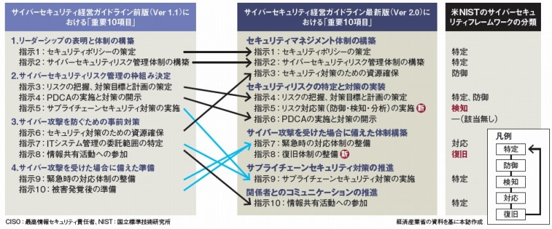

- Sec01-03-X サイバーセキュリティ経営ガイドライン
新旧対応関係- 【2017年12月6日】
- サイバーセキュリティ経営ガイドラインでCISOに指示する10項目の変更ポイント
- 
- 「グローバルで活動する日本企業から従来版をNISTフレームワークに合わせてほしいと要望された」
- 国際的なフレームワークに準拠して「検知」と「復旧」を追加
- 【2.0版】３．サイバーセキュリティ経営の重要１０項目
- 経営者は、CISO等に対して、以下の１０項目を指示し、着実に実施させるとともに、実施内容についてCISO等から定期的に報告を受けることが必要である。自組織での対応が困難な項目については、外部委託によって実施することも検討する。
- ３．１．サイバーセキュリティリスクの管理体制構築
- 指示１ サイバーセキュリティリスクの認識、組織全体での対応方針の策定
- サイバーセキュリティリスクを経営リスクの一つとして認識し、組織全体での対応方針（セキュリティポリシー）を策定させる。
- 対策を怠った場合のシナリオ
- ・経営者がサイバーセキュリティリスクへの対応を策定し、宣言していないと、サイバーセキュリティ対策などの実行が組織の方針と一貫したものとならない。
- ・トップの宣言により、ステークホルダー（株主、顧客、取引先など）の信頼性を高め、ブランド価値向上につながるが、宣言がない場合は、企業におけるサイバーセキュリティへの重要度がステークホルダーに伝わらず信頼性を高める根拠がないこととなる。
- 指示２ サイバーセキュリティリスク管理体制の構築
- サイバーセキュリティ対策を行うため、サイバーセキュリティリスクの管理体制（各関係者の責任の明確化も含む）を構築させる。
- その際、組織内のその他のリスク管理体制とも整合を取らせる。
- 対策を怠った場合のシナリオ
- ・サイバーセキュリティリスクの管理体制を整備していない場合、組織としてサイバーセキュリティリスクの把握が出来ない。
- ・組織内におけるその他のリスク管理体制との整合を取らないと、組織全体としてのリスク管理の方針と不整合が生じる恐れがある。
- 指示３ サイバーセキュリティ対策のための資源（予算、人材等）確保
- サイバーセキュリティリスクへの対策を実施するための予算確保とサイバーセキュリティ人材の育成を実施させる。
- 対策を怠った場合のシナリオ
- ・適切な予算確保が出来ていない場合、組織内でのサイバーセキュリティ対策の実施や人材の確保が困難となるほか、信頼できる外部のベンダへの委託が困難となる恐れがある。
- ・適切な処遇の維持、改善ができないと、有能なサイバーセキュリティ人材を自社にとどめておくことができない。
- ３．２．サイバーセキュリティリスクの特定と対策の実装
- 指示４ サイバーセキュリティリスクの把握とリスク対応に関する計画の策定
- 経営戦略の観点から守るべき情報を特定させた上で、サイバー攻撃の脅威や影響度からサイバーセキュリティリスクを把握し、リスクに対応するための計画を策定させる。
- その際、サイバー保険の活用や守るべき情報について専門ベンダへの委託を含めたリスク移転策も検討した上で、残留リスクを識別させる。
- 対策を怠った場合のシナリオ
- ・企業の経営戦略に基づき、各企業の状況に応じた適切なリスク対応を実施しなければ、過度な対策により通常の業務遂行に支障をきたすなどの不都合が生じる恐れがある。
- ・受容できないリスクが残る場合、想定外の損失を被る恐れがある
- 指示５ サイバーセキュリティリスクに対応するための仕組みの構築
- サイバーセキュリティリスクに対応するための保護対策（防御・検知・分析に関する対策）を実施する体制を構築させる。
- 対策を怠った場合のシナリオ
- ・サイバーセキュリティリスクに応じた適切な対策が行われていない場合、サイバー攻撃が発生した場合の被害が拡大する可能性がある。
- ・技術的な取組を行っていたとしても、攻撃の検知・分析とそれに基づく対応ができるよう、適切な運用が行われていなければ、サイバー攻撃の状況を正確に把握することができず、攻撃者に組織内の重要情報を窃取されるなどの、致命的な被害に発展する恐れがある。
- 指示６ サイバーセキュリティ対策におけるPDCAサイクルの実施
- 計画を確実に実施し、改善していくため、サイバーセキュリティ対策をPDCAサイクルとして実施させる。
- その中で、定期的に経営者に対策状況を報告させた上で、問題が生じている場合は改善させる。
- また、ステークホルダーからの信頼性を高めるため、対策状況を開示させる。
- 対策を怠った場合のシナリオ
- ・PDCA（Plan[計画]、Do[実行]、Check[実施状況の確認・評価]、Act[改善]）を実施する体制が出来ていないと、立てた計画が確実に実行されない恐れがある。
- ・最新の脅威への対応ができているかといった視点も踏まえて組織のサイバーセキュリティ対策を定期的に見直さないと、サイバーセキュリティを巡る環境変化に対応できず、新たに発生した脅威に対応できない恐れがある。
- ・適切な開示を行わなかった場合、社会的責任の観点から、事業のサイバーセキュリティリスク対応についてステークホルダーの信頼を失うとともに、インシデント発生時に企業価値が大きく低下する恐れがある。
- ３．３．インシデント発生に備えた体制構築 3
- 指示７ インシデント発生時の緊急対応体制の整備
- 影響範囲や損害の特定、被害拡大防止を図るための初動対応、再発防止策の検討を速やかに実施するための組織内の対応体制（CSIRT等）を整備させる。
- 被害発覚後の通知先や開示が必要な情報を把握させるとともに、情報開示の際に経営者が組織の内外へ説明ができる体制を整備させる。
- また、インシデント発生時の対応について、適宜実践的な演習を実施させる。
- 対策を怠った場合のシナリオ
- ・緊急時の対応体制を整備していないと、原因特定のための調査作業において、組織の内外の関係者間のコミュニケーションが取れず、速やかな対処ができない。
- ・速やかな情報開示が行われない場合、顧客や取引先等にも被害が及ぶ恐れがあり、損害賠償請求など責任を問われる場合がある。
- ・法的な取り決めがあり、所管官庁等への報告が義務づけられている場合、速やかな通知がないことにより、罰則等を受ける場合がある。
- ・演習を実施していないと、不測の事態が起こった際に、担当者が緊急時に適切に行動することが出来ない。
- 指示８ インシデントによる被害に備えた復旧体制の整備
- インシデントにより業務停止等に至った場合、企業経営への影響を考慮していつまでに復旧すべきかを特定し、復旧に向けた手順書策定や、復旧対応体制の整備をさせる。
- BCPとの連携等、組織全体として整合のとれた復旧目標計画を定めさせる。
- また、業務停止等からの復旧対応について、適宜実践的な演習を実施させる。
- 対策を怠った場合のシナリオ
- ・重要な業務が適切な時間内に復旧できず、企業経営に致命的な影響を与える恐れがある。
- ・演習を実施していないと、不測の事態が起こった際に、担当者が緊急時に適切に行動することが出来ない。
- ３．４．サプライチェーンセキュリティ対策の推進
- 指示９ ビジネスパートナーや委託先等を含めたサプライチェーン全体の対策及び状況把握
- 監査の実施や対策状況の把握を含むサイバーセキュリティ対策のPDCAについて、系列企業、サプライチェーンのビジネスパートナーやシステム管理の運用委託先等を含めた運用をさせる。
- システム管理等の委託について、自組織で対応する部分と外部に委託する部分で適切な切り分けをさせる。
- 対策を怠った場合のシナリオ
- ・系列企業やサプライチェーンのビジネスパートナーにおいて適切なサイバーセキュリティ対策が行われていないと、これらの企業を踏み台にして自社が攻撃されることもある。その結果、他社の２次被害を誘発し、加害者となる恐れもある。また、緊急時の原因特定などの際に、これらの企業からの協力を得られないことにより事業継続に支障が生ずる。
- ・システム管理などの委託業務において、自組織で対応する部分と委託する部分の境界が不明確となり、対策漏れが生じる恐れがある。
- ３．５．ステークホルダーを含めた関係者とのコミュニケーションの推進
- 指示１０ 情報共有活動への参加を通じた攻撃情報の入手とその有効活用及び 提供
- 社会全体において最新のサイバー攻撃に対応した対策が可能となるよう、サイバー攻撃に関する情報共有活動へ参加し、積極的な情報提供及び情報入手を行わせる。
- また、入手した情報を有効活用するための環境整備をさせる。
- 対策を怠った場合のシナリオ
- ・情報共有活動への参加により、解析した攻撃手法などの情報を用いて、他社における同様の被害を未然に防止することができるが、情報共有ができていないと、社会全体において常に新たな攻撃として対応することとなり、企業における対応コストが低減しない。
- 【1.1版】３．サイバーセキュリティ経営の重要１０項目
- 経営者は、CISO等に対して、以下の１０項目を指示し、着実に実施させることが必要である。
- ３．１．リーダーシップの表明と体制の構築
- （１）サイバーセキュリティリスクの認識、組織全体での対応の策定
- サイバーセキュリティリスクを経営リスクの一つとして認識し、組織全体での対応方針（セキュリティポリシー）を策定していますか？
- 対策を怠った場合のシナリオ
- ・経営者がサイバーセキュリティリスクへの対応を策定し、宣言することにより、組織のすべての構成員にサイバーセキュリティリスクに対する考え方を周知することができる。宣言がないと、構成員によるサイバーセキュリティ対策などの実行が組織の方針と一貫したものとならない。
- ・トップの宣言により、株主、顧客、取引先などの信頼性を高め、ブランド価値向上につながるが、宣言がない場合は信頼性を高める根拠がないこととなる。
- 対策例
- ・経営者が組織全体の対応方針を組織の内外に宣言できるよう、企業の経営方針と整合を取り、サイバーセキュリティリスクマネジメントを考慮したセキュリティポリシーを策定する。

- （２）サイバーセキュリティリスク管理体制の構築
- サイバーセキュリティ対策を行うため、経営者とセキュリティ担当者をつなぐ仲介者としてのCISO等からなる適切なサイバーセキュリティリスクの管理体制の構築は出来ていますか？
各関係者の責任は明確になっていますか？
また、防犯対策など組織内のその他のリスク管理体制と整合をとらせていますか？ - 対策を怠った場合のシナリオ
- ・サイバーセキュリティリスクの管理体制が整備されていない場合、サイバーセキュリティリスクの把握が出来ない。
- ・CISO等が任命され、権限を付与されていないと、技術的観点と事業戦略の観点からサイバーセキュリティリスクをとらえることができない。仮にサイバー攻撃を受け、事業の継続性に支障が生じるようなシステム停止等の判断が必要な局面において、経営者レベルでの権限が付与されていないと、適時適切な対応ができない。また、責任の所在が不明となる。
- ・組織内におけるリスク管理体制など他の体制との整合を取らないと、同様の活動を重複して実施することになり、また関連情報の共有ができず、非効率である
- ・万が一、インシデントが発生した場合、組織としての対応ができず、被害の状況の把握、原因究明、被害を抑える手法、インシデント再発の防止などの対策を組織として取ることができない。
- 対策例
- ・組織内に経営リスクに関する委員会を設置し、サイバーセキュリティリスクに責任を持った者が参加する体制とする。
- ・組織の対応方針（セキュリティポリシー）に基づき、CISO等の任命及び、組織内サイバーセキュリティリスク管理体制を構築する。
- ・CISO等には、組織の事業戦略を把握するため取締役会への参加及び緊急時のシステム停止等の経営者レベルの権限を付与することを検討する。
- ・取締役、監査役はそのサイバーセキュリティリスク管理体制が構築、運用されているかを監査する。
- ３．２ サイバーセキュリティリスク管理の枠組み決定
- （３）サイバーセキュリティリスクの把握と実現するセキュリティレベルを踏まえた目標と計画の策定
- サイバー攻撃の脅威に対し、経営戦略の観点から、守るべき資産を特定させた上で、社内ネットワークの問題点などのサイバーセキュリティリスクを把握させていますか？
その上で、暗号化やネットワークの分離など複数のサイバーセキュリティ対策を組み合わせた多層防御など、リスクに応じた対策の目標と計画を策定させていますか？
また、サイバー保険の活用や守るべき資産について専門企業への委託を含めたリスク移転策も検討した上で、残留リスクを識別させていますか？ - 対策を怠った場合のシナリオ
- ・ITを活用するすべての企業・組織は、何らかのサイバーセキュリティリスクを抱えている。ただし、リスクは、企業の守るべき資産（個人情報や重要技術等）の内容や現在の企業・組織内のネットワーク環境などによって企業ごとに異なる。
- ・企業の経営戦略に基づき、各企業の状況に応じた適切なリスク対策をしなければ、過度な対策により通常の業務遂行に支障をきたすなどの不都合が生じる恐れがある。
- ・受容できないリスクが残る場合、想定外の損失を被る恐れがある。
- 対策例
- ・経営戦略に基づくさまざまな事業リスクの一つとして、サイバー攻撃に伴うリスク（例えば、戦略上重要な営業秘密の流出による損害）を識別する。
- ・識別したリスクに対し、実現するセキュリティレベルを踏まえた対策の検討を指示する。その際、ITへの依存度を把握した上で、セキュリティの三要件（機密性、完全性、可用性）の観点からリスクを分析する。その結果、リスク低減、回避、移転（サイバー保険の活用や守るべき資産について専門企業への委託等）が可能なものについてはリスク対応策を実施する。例えば、ソフトウェア更新の徹底、マルウェア対策ソフトの導入などによるマルウェア感染リスクの低減策を実施する。また、重要業務を行う端末、ネットワーク、ITシステム又はITサービス（クラウドサービスを含む）には、暗号化や情報資産別のネットワークの分離等の多層防御の実施を検討する。
- （４）サイバーセキュリティ対策フレームワーク構築（PDCA）と対策の開示
- 計画を確実に実施し、改善していくため、サイバーセキュリティ対策をPDCAとして実施するフレームワークを構築させていますか？
その中で、監査（または自己点検）の実施により、定期的に経営者に対策状況を報告させた上で、必要な場合には、改善のための指示をしていますか？
また、ステークホルダーからの信頼性を高めるため、対策状況について、適切な開示をさせていますか？ - 対策を怠った場合のシナリオ
- ・PDCA（Plan[計画]、Do[実行]、Check[実施状況の確認・評価]、Act[改善]）を実施するフレームワークが出来ていないと、立てた計画が確実に実行されない恐れがある。また、組織のサイバーセキュリティ対策の状況を、最新の脅威への対応ができているかといった視点も踏まえつつ正しく把握し、対策を定期的に見直すことが必要。これを怠ると、サイバーセキュリティを巡る環境変化に対応できず、対策が陳腐化するとともに、新たに発生した脅威に対応するための追加的に必要な対策の実施が困難となる。
- ・適切な開示が行われなかった場合、社会的責任の観点から、事業のリスク対応についてステークホルダーの不安感や不信感を惹起させるとともに、サイバーセキュリティリスクの発生時に透明性をもった説明ができない。また、取引先や顧客の信頼性が低下することによって、企業価値が毀損するおそれがある。
- 対策例
- ・サイバーセキュリティリスクに継続して対応可能な体制（プロセス）を整備する（PDCAの実施体制の整備）。なお、その他の内部統制に係るPDCAのフレームワークが存在する場合には、当該フレームワークとの連動も含め、効率的に実施することも可能である。
- ・重点項目（２）で設置した経営リスクに関する委員会において、PDCAの実施状況について報告すべき時期や内容を定め、経営者への報告の機会を設けるとともに、新たな環境変化によるサイバーセキュリティリスクが生じていないかを確認する。
- ・必要に応じて監査を受け、現状のサイバーセキュリティ対策の問題点を検出し、改善を行う。
- ・新たなサイバーセキュリティリスクの発見等により、追加的に対応が必要な場合には、速やかに対処方針の修正を指示する。
- （５）系列企業や、サプライチェーンのビジネスパートナーを含めたサイバーセキュリティ対策の実施及び状況把握
- 自社のサイバーセキュリティが確保されるためには、系列企業やサプライチェーンのビジネスパートナーを含めてサイバーセキュリティ対策が適切に行われていることが重要。このため、監査の実施や対策状況の把握を含むサイバーセキュリティ対策のPDCAについて、系列企業やサプライチェーンのビジネスパートナーを含めた運用をさせていますか？
- 対策を怠った場合のシナリオ
- ・系列企業やサプライチェーンのビジネスパートナーにおいて適切なサイバーセキュリティ対策が行われていないと、これらの企業を踏み台にして自社が攻撃されることもある。その結果、他社の２次被害の誘因となる恐れや、加害者になる恐れもある。また、緊急時の原因特定などの際に、これらの企業からの協力を得られないことにより事業継続に支障が生ずる。
- 対策例
- ・系列企業やサプライチェーンのビジネスパートナーのサイバーセキュリティ対策の内容を契約書等で合意する。
- ・系列企業やサプライチェーンのビジネスパートナーのサイバーセキュリティ対策状況（監査を含む）の報告を受け、把握している。
- ３．３．サイバー攻撃を防ぐための事前対策
- （６）サイバーセキュリティ対策のための資源（予算、人材等）確保
- サイバーセキュリティリスクへの対策を実施するための予算確保は出来ていますか？
また、サイバーセキュリティ人材の育成や適切な処遇をさせていますか？ - 対策を怠った場合のシナリオ
- ・適切な予算確保が出来ていない場合、組織内でのサイバーセキュリティ対策の実施や人材の確保が困難となるほか、信頼できる外部のベンダへの委託が困難となる恐れがある。
- ・適切な処遇の維持、改善ができないと、有能なサイバーセキュリティ人材を自社にとどめておくことができない。
- 対策例
- ・必要なサイバーセキュリティの事前対策を明確にし、それに要する費用を明らかにするよう、指示を行う。
- ・セキュリティ担当者以外も含めた従業員向け研修等のための予算を確保し、継続的にセキュリティ教育を実施する。
- ・経営会議などで対策の内容に見合った適切な費用かどうかを評価した上で、予算として承認を得る。
- ・サイバーセキュリティ人材を組織内で雇用することが困難な場合は、専門ベンダの活用を検討する。
- ・組織内人事部門に対して、組織内のIT人材育成の戦略の中で、セキュリティ人材育成、キャリアパス構築を指示し、内容を確認する。
- サイバーセキュリティリスクへの対策を実施するための予算確保は出来ていますか？
- また、サイバーセキュリティ人材の育成や適切な処遇をさせていますか？
- （７）ITシステム管理の外部委託範囲の特定と当該委託先のサイバーセキュリティ確保
- サイバーセキュリティ対策を効率的かつ着実に実施するため、リスクの程度や自組織の技術力などの実態を踏まえ、ITシステムの管理等について、自組織で対応する部分と外部に委託する部分で適切な切り分けをさせていますか？また、ITシステム管理を外部委託する場合、当該委託先へのサイバー攻撃等も想定し、当該委託先のサイバーセキュリティの確保をさせていますか？
- 対策を怠った場合のシナリオ
- ・ITシステムなどの運用について、自組織に技術がない場合はシステム管理を十分に行えず、システムに脆弱性が残り、その脆弱性を突いた攻撃を受ける恐れが高まる。
- ・委託先のサイバーセキュリティリスク対応が事業にリスクを及ぼす状況であると、自社のみが対応をしてもリスクにさらされる恐れがある。
- 対策例
- ・自組織の技術力を踏まえ、各対策項目を自組織で対応できるかどうか整理する。
- ・委託先のサイバーセキュリティリスク対応を徹底するため、委託先のセキュリティレベルを契約書等で合意し、それに基づいて委託先の監査を実施する。
- ・個人情報や技術情報などの重要な資産を委託先に預ける場合は、委託先の経営状況などを踏まえて、資産の安全性の確保が可能であるかどうかを定期的に確認する。
- （８）情報共有活動への参加を通じた攻撃情報の入手とその有効活用のための環境整備
- 社会全体において最新のサイバー攻撃に対応した対策が可能となるよう、サイバー攻撃に関する情報共有活動への参加と、入手した情報を有効活用するための環境整備をさせていますか？
- 対策を怠った場合のシナリオ
- ・情報共有活動への参加により、解析した攻撃手法などの情報を用いて、他社における同様の被害を未然に防止することができるが、情報共有ができていないと、社会全体において常に新たな攻撃として対応することとなり、全体最適化ができない
- 対策例
- ・情報の入手と提供という双方向の情報共有を通じて、社会全体でサイバー攻撃の防御につなげることが重要。情報共有を通じたサイバー攻撃の防御につなげていくため、情報を入手するのみならず、積極的な情報提供が望ましい。
- ・IPAや一般社団法人JPCERTコーディネーションセンター等による注意喚起情報を、自社のサイバーセキュリティ対策に活かす。
- ・CSIRT間における情報共有や、日本シーサート協議会等のコミュニティ活動への参加による情報収集等を通じて、自社のサイバーセキュリティ対策に活かす。
- ・IPAに対し、告示（コンピュータウイルス対策基準、コンピュータ不正アクセス対策基準）に基づいてマルウェア情報や不正アクセス情報の届出をする。
- ・一般社団法人JPCERTコーディネーションセンターにインシデントに関する情報提供を行い、必要に応じて調整を依頼する。
- ・重要インフラ事業者の場合には、J-CSIPなどの情報共有の仕組みを利用する。
- ３．４．サイバー攻撃を受けた場合に備えた準備
- （９）緊急時の対応体制（緊急連絡先や初動対応マニュアル、CSIRT）の整備、定期的かつ実践的な演習の実施
- 適切な初動対応により、被害拡大防止を図るため、迅速に影響範囲や損害を特定し、ITシステムを正常化する手順を含む初動対応マニュアル策定や組織内のCSIRT構築など対応体制の整備をさせていますか？また、定期的かつ実践的な演習を実施させていますか？
- 対策を怠った場合のシナリオ
- ・緊急時の対応体制が整備されていないと、原因特定のための調査作業において、組織の内外の関係部署間の情報の共有やコミュニケーションが取れず、速やかな原因特定、応急処置を取ることができない。
- ・緊急時は、定常業務時と異なる環境となり規定された通りの手順を実施することが容易でないことが多い。演習を実施していないと、担当者は、緊急に適切に行動することが出来ない。
- 対策例
- ・企業の組織に合わせた緊急時における対応体制を構築する。
- ・サイバー攻撃による被害を受けた場合、被害原因の特定および解析を速やかに実施するため、関係機関との連携や、ログの調査を速やかにできるようにしておくよう指示する。また、対応担当者にはサイバー攻撃に対応する演習を実施する。なお、インシデント収束後の再発防止策の策定も含めて訓練を行うことが望ましい。
- ・緊急連絡網を整備する。その際には、システム運用、Webサイト保守・運用、契約しているセキュリティベンダなどの連絡先も含める。
- ・初動対応時にはどのような業務影響が出るか検討し、緊急時に組織内各部署(総務、企画、営業等）が速やかに協力できるよう予め取り決めをしておく。
- ・訓練においては技術的な対応のみならず、プレスリリースの発出や、所管官庁等への報告手順も含めて想定する。
- （１０）被害発覚後の通知先や開示が必要な情報の把握、経営者による説明のための準備
- 外部に対して迅速な対応を行うため、被害の発覚後の通知先や開示が必要な情報について把握させていますか？また、情報開示の際、経営者が組織の内外への説明が出来る体制の整備をさせていますか？
- 対策を怠った場合のシナリオ
- ・速やかに通知や注意喚起が行われない場合、顧客や取引先等へ被害が及ぶ恐れがあり、損害賠償請求など責任を問われる場合がある。
- ・法的な取り決めがあり、所管官庁への報告等が義務付けられている場合、速やかな通知がないことにより、罰則等を受ける場合がある。
- ・組織内情報管理の責任者である経営者が感染被害を発表しないと、ステークホルダーに対し、組織としての責任を明らかにすることができない。
- 対策例
- ・サイバー攻撃の被害が発覚後、速やかに通知や注意喚起が行えるよう、通知先の一覧や通知用のフォーマットを作成し、対応に従事するメンバーに共有しておく。また、情報開示の手段について確認をしておく。
- ・関係法令を確認し、法的義務が履行されるよう手続きを確認しておく。
- ・経営者が組織の内外への発表を求められた場合に備えて、インシデントに関する被害状況、他社への影響などについて経営者に報告を行う。
- ・インシデントに対するステークホルダーへの影響を考慮し、速やかにこれを公表する。
- ・社外への公表は、インシデントや被害の状況に応じて、初期発生時、被害状況把握時、インシデント収束時など、それぞれ適切なタイミングで行う。